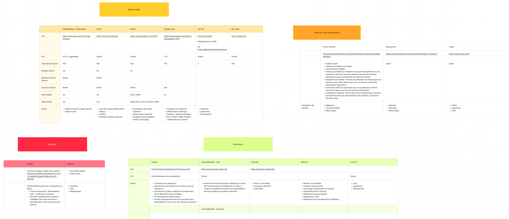
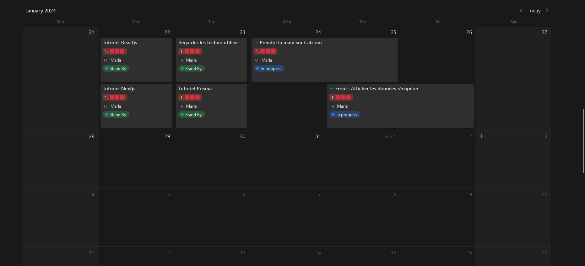
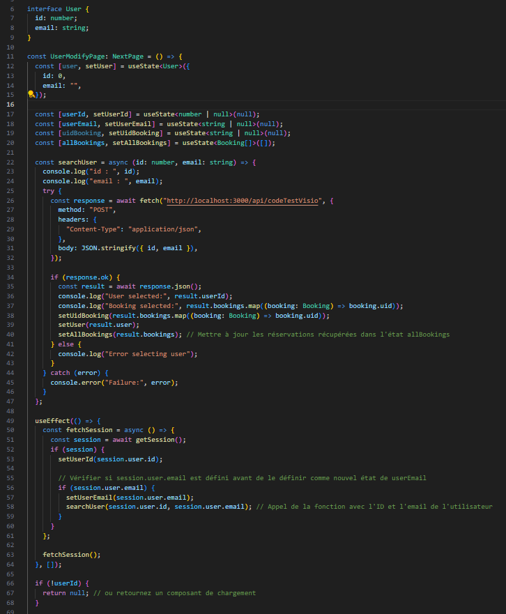
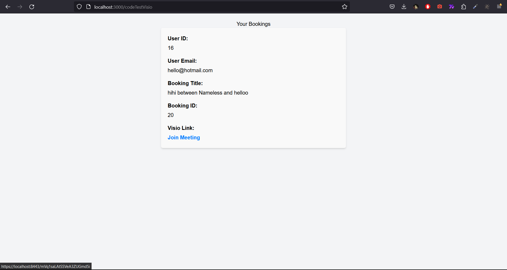

Stage de 2e année
À Propos de PROS AND CONSULTING
J'ai effectué mon stage au sein de Pros and Consulting, une société spécialisée
dans le conseil en systèmes et logiciels informatiques ainsi que dans l'édition
de logiciels. Il s'agit d'une Société par Actions Simplifiée à associé unique.
Avec une équipe de 2 salariés, dont un alternant, Pros and Consulting est basée
au 15 rue du Château à La Garenne-Colombes et a été fondée en 2021 par Jérémy Ganem.
Historique : Tout d'abord, mon tuteur de stage, Jérémy Ganem, a créé seul la société Pros and Consulting le 1er juillet 2021. Au départ, il l'utilisait principalement comme cadre pour développer ses idées et réaliser des missions en freelance, mais aussi pour protéger ses données. Par la suite, un alternant a été ajouté, puis un deuxième qui est parti cette année.
RGPD : Ils le mettent en œuvre pour leurs clients, bien qu'ils n'aient pas souvent cette problématique, à l'exception d'un projet utilisant WhatsApp.
Ressources tangibles : Ils disposent d'un bureau chez Alfred AI (l'autre entreprise de Jérémy) qu'ils partagent.
Ressources intangibles : Ils ont mis en place une méthodologie de travail, ont des clients satisfaits, ainsi qu'un ensemble complet d'outils pour Sublimeet, Pixelimum, et un grand volume de code. Ils bénéficient également de ressources intellectuelles grâce aux deux membres de l'équipe, dont Yonathan Cardaso, qui adopte une approche pratique et fait de la gestion de projet.
Mes différentes missions
- Benchmark des technologies à utiliser pour leur futur plateforme web de consultation en ligne Sublimeet.
- Prise en main de Calcom avec leur version open-source et documentation de celle ci.
- Prise en main de plusieurs technologies.
- Tentative de l'utilisation de l'API Calcom qui a fini par faire le CRUD de User.
- Faire une visio-conférence en localhost en utilisant l'open source de Calcom et Jitsi-meet.
Benchmark des technologies à utiliser :
Planification des activités
Visuel du repository de Calcom

Visio-conférence avec Jeetsi-meet :
 Ce stage m'a permis d'apprendre de nombreux concepts et outils que je ne connaissais pas auparavant, et de approfondir mes connaissances existantes. J'ai compris l'importance de l’utilisation d’outils et technologies afin de gagner du temps. Il m'a également donné un aperçu du cadre de travail en entreprise et m'a aidé à identifier mes préférences professionnelles. En résumé je repars de ce stage avec des connaissances qui me seront très utiles à l’avenir.